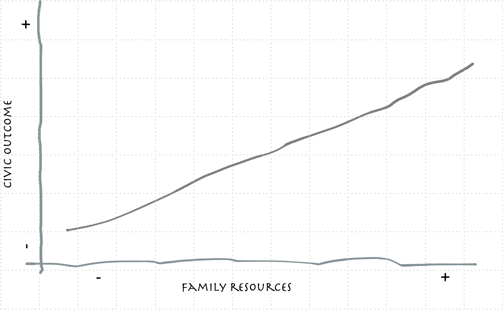
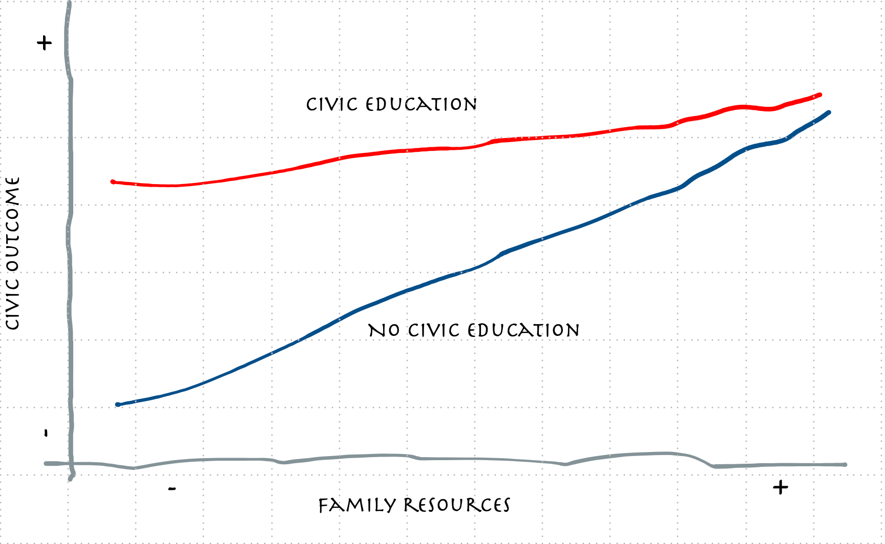
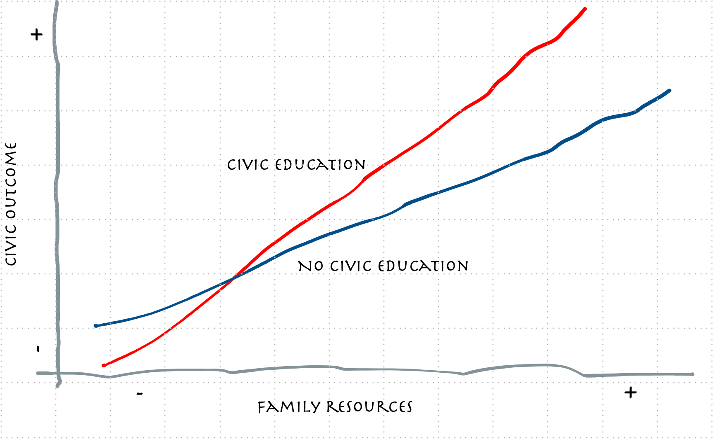
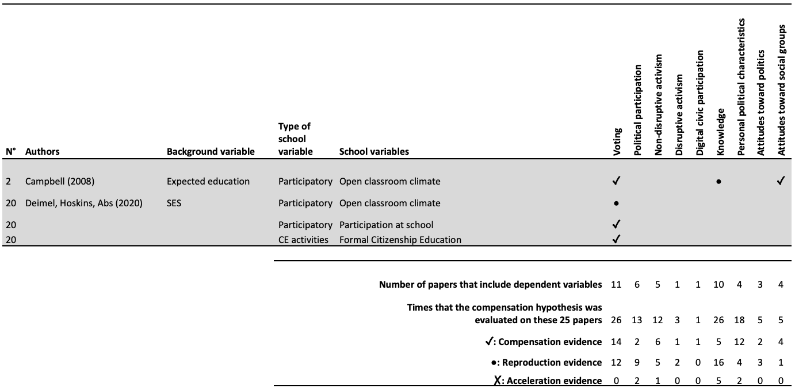
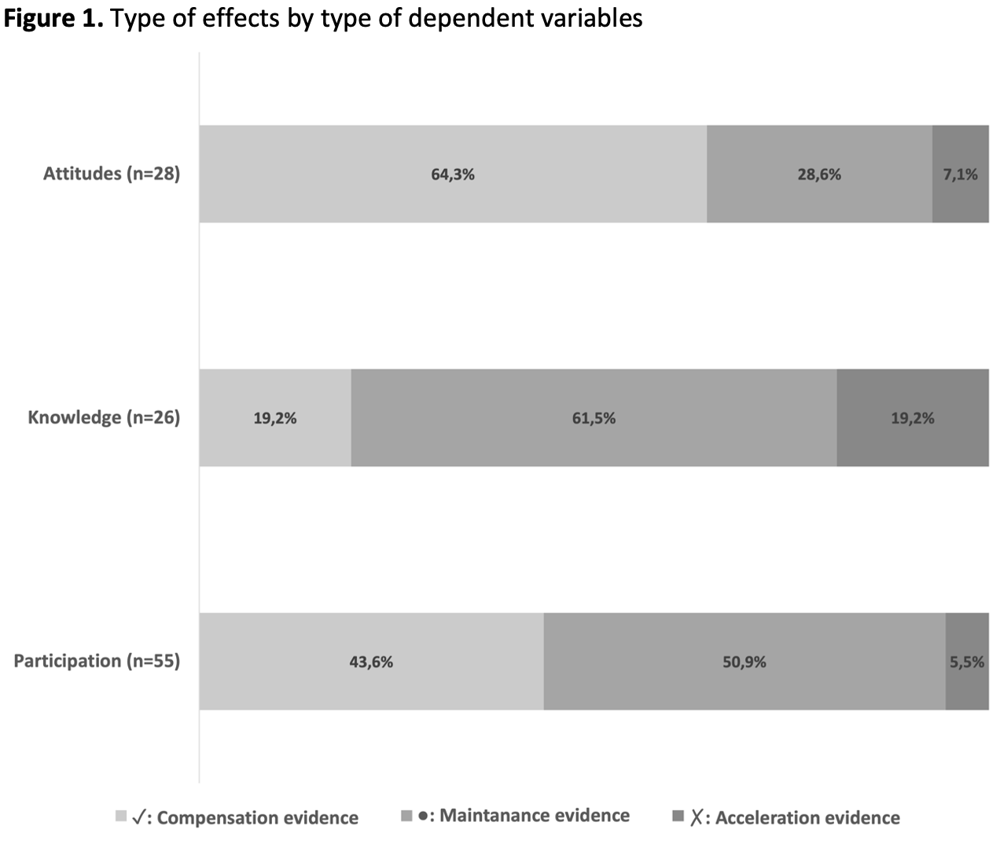
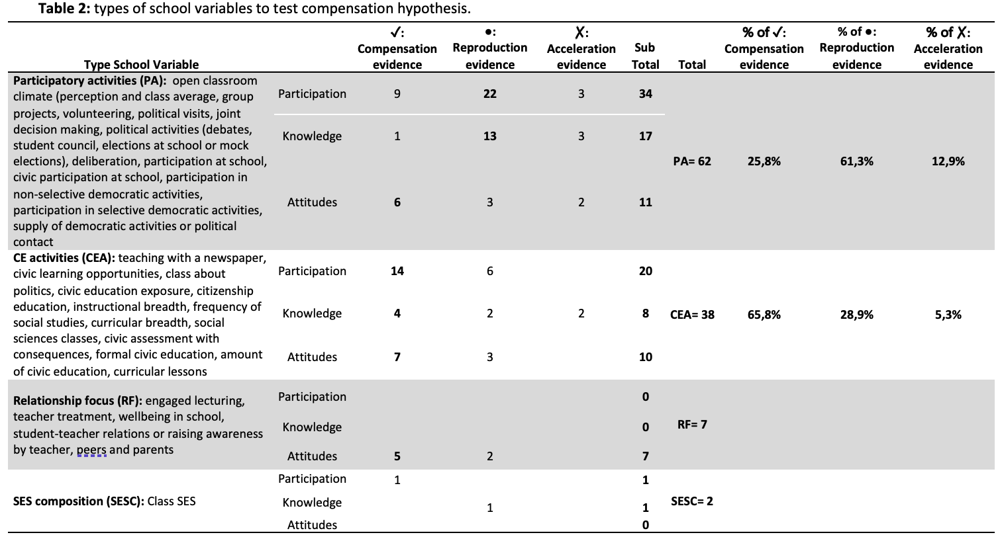

Civic education as a tool to mitigate social inequalities in civic outcomes: a literature review.
Daniel Miranda
Department of Psychology, Universidad de Chile
Millennium Nucleus of Inequalities and Digital Opportunities (nudos.cl)
Centre for the Conflict and Social Cohesion Studies (coes.cl)
FONDECYT 1240922: Youth political attitudes and behavior: inequality, school socialization styles and intergenerational influences
IX Seminar Data of and for the Educational System: Tools for Research and Teaching- Rome, 17 – 18 – 19 October 2024
Citizenship education agenda
Why a review on this topic?
Current and previous project on political socialization
A general research questions that we address was:
What are the factors and mechanisms that explain the intergenerational transmission of political inequality?
To what extent is the school an agent that reproduces or mitigates the intergenerational transmission of family political inequality?
Political inequality
Political inequality constitutes a threat to the principles of the democratic system (Burns et al., 1997; Solt, 2008).
The proper functioning of democracy rests on its citizens equally participating in the decision-making processes, being interested in issues of social and political relevance, adhering to democratic principles, and developing attitudes and knowledge consistent with life in a democratic society.
Some people, depending on their educational level, economic resources, gender or national origin, may have different degrees of access to political voice, interest in politics, knowledge, adherence to democratic values or principles, etc.
Family origin and civic outcomes
Political inequalities are observed in the adult population and from an early age (Castillo et al., 2014; Meirick & Wackman, 2004; Miranda, 2023)
The family transmits beliefs, attitudes, knowledge and skills pertinent to exercising citizenship, directly socializing the offspring.
Additionally, the family transmits the advantages of its social position to the next generation, which translates into a transmission of political inequality.
Family origin and civic outcomes
Compensantion hypothesis
The school system provides a series of activities, defined both formally and informally, that have the potential to nurture those aspects relevant to the exercise of citizenship.
The compensation hypothesis proposes that the school experience, ideally similar for all who attend, can level, moderate, mitigate or compensate for the gaps caused by social origin (Campbell, 2019).
Langton & Jennings (1968) describe that the middle class (socio-economically advantaged) benefits less from civic education than the working class (socio-economically disadvantaged, such as African Americans in their case) because of the redundancy of information (Ceiling effect, (Neundorf et al., 2016)).
Compensation of inequalities (mitigate)
Fostering inequalities

The aims of this work in progress is to evaluate what the literature says about citizenship education’s role in influencing origin’s gaps, such as whether it has compensation, acceleration or maintenance effects.
Review procedure
Non sistematic review, focused on studies that test the hypothesis
Up to now 25 papers between 1993 and 2024
109 test, considering different dependent variables on some papers.
Review procedure
Review procedure
In a classic study at this point, Campbell (2008) presents evidence in favour of the compensation hypothesis. Using data from the CIVED 1999 study for the 24 participating countries, the author shows that an open classroom climate compensated for the relationship of SES with acceptance of conflict and intention to vote. Two things stand out in this study. First, the climate variable is treated as a characteristic of schools. The school average is controlled by individual variability centred at schools. Second, it highlights that the SES variable is the expected education of the student as a proxy. Both ways of evaluating these variables are discussed and justified by the author and have been subsequently used by various authors.
Deimel et al. (2020) evaluated the compensation role of students’ perception of open classroom climate (usual index), participation at school (report of six-based civic activities) and formal citizenship education (extent of seven topics related to civic education) on the association among SES index with intended electoral participation. The authors used a four-country sample from ICCS 2016 (Belgium, Denmark, Germany and the Netherlands). Evidence indicates that participation at school compensates for SES inequalities in Intended Electoral Participation in Belgium in 2016. Formal citizenship education compensates for SES inequalities in the intended electoral participation of Denmark, Germany, and the Netherlands.
Results
Global results
Regardless of the type of dependent variable, it is observed that 47 of the pieces of evidence refer to compensation effects (43.1%); 52 refer to maintenance, which implies that an effect was not observed (47.7%), and 10 refers to an acceleration effect (a 9.2%).
Although the most common result is maintenance, the evidence favouring the compensation hypothesis is outstanding.
What is compensated?
Participation: Intention to vote, electoral participation, voter registration turnout, joining a political party, political participation, and future high-intensity participation, political discussion, expression of opinions, political engagement, expressive participation, index of political engagement, intended legal protest, Intended Illegal protest, use of social media
Knowledge: we can distinguish, on the one hand, the concept of civic knowledge, coming mainly from the studies developed by the IEA, linked to the idea of political sophistication (Miranda & Herrera-Leighton, 2021; Rapeli, 2013) and , on the other, factual political knowledge, which is closer to the idea of historical and political facts (Delli Carpini & Keeter, 1996).
Political or personal attitudes: Regarding attitudes, it is possible to distinguish some articles that address agentic political attitudes, such as political efficacy (addressed 18 times), attitudes towards political system reflected in political interest or support for democracy (addressed five times), and attitudes towards social groups, such as tolerance or gender equality attitudes (addressed five times).
What is compensated?
How social origin is conceptualized?
Multiple aspects of stratification as interchangeable or as a combination of the different aspects in a single indicator.
An additional approach combines traditional socioeconomic variables with family political socialization variables, as home political environment.
Alternatively, social background can be seen as a specific expectation of students’ educational achievement.
Another way to capture social inequalities involves gender, ethnicity or immigration status gaps.
How are civic education defined?
Participatory activities (PA): open classroom climate (perception and class average, group projects, volunteering, political visits, joint decision making, political activities (debates, student council, elections at school or mock elections), deliberation, participation at school, civic participation at school, participation in non-selective democratic activities, participation in selective democratic activities, supply of democratic activities or political contact
CE activities (CEA): teaching with a newspaper, civic learning opportunities, class about politics, civic education exposure, citizenship education, instructional breadth, frequency of social studies, curricular breadth, social sciences classes, civic assessment with consequences, formal civic education, amount of civic education, curricular lessons
Focus on relationship: engaged lecturing, teacher treatment, wellbeing in school, student-teacher relations or raising awareness by teacher, peers and parents
SES composition: class or school SES
How are civic education defined?
Discussion
Evidence favouring the compensation hypothesis is prominent (43% of reported results support that schools’ characteristics, mainly using civic education activities, can compensate inequalities of origin).
- Aligned with previous literature, working-class students benefit more from civic education activities in schools with those characteristics than middle-class students.
But, the evidence also shows that this effect does not occur in 47% of reported results, and even more, in a 9% the civic education foster inequalities.
Discussion
Additionally, it noted that compensation effects are most prevalent in attitudinal and participation variables, while acceleration and maintenance effects are more evident on knowledge variables.
Participatory activities at schools tend to show mainly maintenance or acceleration effects.
In contrast, citizenship education activities often lead to compensation effects, particularly on participation variables.
Future research
Still, the evidence is not considered conclusive, considering the variability of proofs. This indicates that this hypothesis requires further research to unravel under what conditions it occurs and for which variables it is most generative.
Additionally, there some challenges that must be considered.
- Firstly, the problem of measuring the variables involved in the analysis. As could be observed for the social origin variables, the civic outcome variables and the characterization of activities aimed at citizen education present diverse approaches.
ICCS studies could be used to evaluate the hypothesis in a systematic way (oriented to a meta-analytical frame)
Thanks!
- NUDOS website: www.nudos.cl
- COES website: www.coes.cl
References
Burns, N., Schlozman, K. L., & Verba, S. (1997). The Public Consequences of Private Inequality: Family Life and Citizen Participation. American Political Science Review, 91(2), 373–389. https://doi.org/10.2307/2952362
Campbell, D. E. (2008). Voice in the Classroom: How an Open Classroom Climate Fosters Political Engagement Among Adolescents. Political Behavior, 30(4), 437–454. https://doi.org/10.1007/s11109-008-9063-z
Campbell, D. E. (2019). What social scientists have learned about civic education: A review of the literature. Peabody Journal of Education, 94(1), 32–47. https://doi.org/10.1080/0161956X.2019.1553601
Castillo, J. C., Miranda, D., Bonhomme, M., Cox, C., & Bascopé, M. (2014). Social inequality and changes in students’ expected political participation in Chile. Education, Citizenship and Social Justice, 9(2), 140–156. https://doi.org/10.1177/1746197914520650
Cox, C., Bascopé, M., Castillo, J. C., Miranda, D., & Bonhomme, M. (2015). Educación ciudadana en america latina: Prioridades de los curriculos escolares. (pp. 321–372). Ediciones Universidad Católica de Chile.
Deimel, D., Hoskins, B., & Abs, H. J. (2020). How do schools affect inequalities in political participation: Compensation of social disadvantage or provision of differential access? Educational Psychology, 40(2), 146–166.
Delli Carpini, M. X., & Keeter, S. (1996). What Americans Know about Politics and Why It Matters. Yale University Press.
Langton, K. P., & Jennings, M. K. (1968). Political Socialization and the High School Civics Curriculum in the United States. The American Political Science Review, 62(3), 852–867. https://doi.org/10.2307/1953435
Meirick, P. C., & Wackman, D. B. (2004). Kids Voting and Political Knowledge: Narrowing Gaps, Informing Votes. Social Science Quarterly, 85(5), 1161–1177.
Miranda, D. (2023). Socio-economic inequalities of families and their differential impact on types of political participation in the new generation of 24 countries (Desigualdades socio-económicas familiares y su impacto diferencial sobre tipos de participación política de nuevas generaciones en 24 países). International Journal of Social Psychology, 38(3), 602–641. https://doi.org/10.1080/02134748.2023.2239576
Miranda, D., & Herrera-Leighton, A. (2021). Conocimiento cívico: Concpeto, antecedentes y consecuencias. In Ciudadanías, educación y juventudes: Investigaciones y debates para el Chile del futuro. Ediciones UC.
Neundorf, A., Niemi, R. G., & Smets, K. (2016). The Compensation Effect of Civic Education on Political Engagement: How Civics Classes Make Up for Missing Parental Socialization. Political Behavior, 38(4), 921–949. https://doi.org/10.1007/s11109-016-9341-0
Rapeli, L. (2013). The Conception of Citizen Knowledge in Democratic Theory. Springer.
Solt, F. (2008). Economic inequality and democratic political engagement. American Journal of Political Science, 52(1), 48–60. http://www.jstor.org/stable/25193796